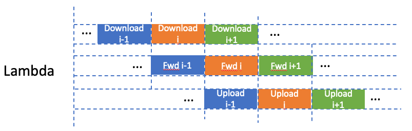

WuKong: In Search of a Fast and Efficient Serverless DAG Engine
A serverless-oriented, decentralized, datalocality aware DAG engine
minimize the network communication overhead while maximizing data locality whenever possible.
decentralized scheduling where a DAG is partitioned into sub-graphs that are distributed to separate task executors
provides efficient storage mechanisms for managing intermediate data
A Jounrney from the serverful to the serverless
A Strawman Scheduler
- Performance bottlenecks: the large number of concurrent TCP connection requests is easy to overwhelm the scheduler.
Publish/Subscribe Model
Sending task completion messages through pub/sub channels was more efficient than using a large number of concurrent TCP connections.
struggles to launch Lambda functions quickly enough for large, bursty workloads due to the large cost of invoking a Lambda function.
+Parallel Invokers
WuKong desigen
Static Scheduling
A static schedule contains three types of operations: task execution, fan-in, and fan-out.
Two leaf nodes implies two static schedule, blue and read.
T1, T2, T3, T5.
Dynamic Scheduling
Scheduling conflict zone between static schedules.
dependency counter.
T4, T6.
Storage Management
Task Executors publish their intermediate and final task output objects to the KV Store.
Final outputs are relayed to a Subscriber process in the Scheduler for presentation to the Client.
Small Fan-out Task Invocations are handled by task itself.
Large Fan-out Task Invocations are handled by KVS.
Notes
doesn’t consider the code-start issue.
- As mentioned earlier, serverless computing suffers from cold starts. We address this issue by warming up a pool of Lambdas.
only works when computation latency outweighs invocation latency between the two lambdas.
methods:
Decentralization of Task Executors
Parallel-Invoker
KV Store Proxy
Sequoia: Enabling Quality-of-Service in Serverless Computing
Sequoia is designed as a drop-in framework that improves overall management by enabling QoS in a lightweight and low overhead manner.
Limitations with the current serverless platform:
Inconsistent and incorrect concurrency limits
- Default concurrency limits are documented to be 1,000, but up to 1,200 concurrent functions are run in paralle.
Mid-chain drops
- A burst of 1,000 Fan-2’s will ultimately result in 2,000 concurrent functions, only 48-54% chains successfully
completing.
Burst intolerance
- Significant losses occur when burst due to the cold start issue.
HTTP prioritization
- HTTP has a higher priority than background invocations.
Inefficient resource allocation
- VM/container pool leads to inefficient resource allocation.
Concurrency collapse
- Concurrency reaches the limit but then drops and does not immediately recover.
Sequoia desigen
QoS Scheduler
enqueue DAGs to Pending Queue (PQ), enqueue each nodes of DAGs to Chain Running Queue (CRQ).
Worker Threads in the thread pool are the main driver. When a thread schedules a function it blocks until its function completes and afterwards makes itself available to the thread pool.
Logging Framework
- state information from live metric streams
Policy Framework
- an entry point to add, remove, or alter policies in the system.
Notes
- We can use a thread pool to manage the concurrency more precisely.
Kappa: A Programming Framework for Serverless Computing
Kappa is a framework that simplifies serverless development by providing a familiar programming model.
It uses checkpointing to handle lambda function timeouts, and provides concurrency mechanisms that enable parallel computation and coordination.
Kappa desigen
Checkpointing
- To run long tasks on time-bounded lambdas, Kappa checkpoints program state periodically and restores from this checkpoint upon lambda function timeout.
Concurrency API
- To program parallel lambdas, Kappa provides a concurrency API which is modeled after Python’s built-in multiprocessing package and should be familiar to programmers.
Fault tolerance
- Using checkpoints, Kappa ensures that execution never diverges due to nondeterminism.
Checkpoint latency
For 1M size checkpoint, the latency is 80ms for S3 and 6ms for Redis.
Notes
Checkpoint is not necessary for most serverless application. Parallel composition is more common.
Due to the low cost of servlerss computing, failure-retry is more efficient tahn checkpoint.
Redis is faster than S3.
Photons: Lambdas on a diet
Photons is a framework leveraging workload parallelism to co-locate multiple instances of the same function within the same runtime.
Concurrent invocations can then share the runtime and application state transparently, without compromising execution safety.
Photons desigen
Vertical and horizontal scaling
Vertical scaling: scheduled on the same machine
Horizontal scaling: scheduled on another machine
drawback: invocations infect each other and resource contention.
a good scale policy is hard for user.
Evalution
- Memory
- Cold starts
- performance cost tradeoff
Notes
- This approach sacrifices the auto-scale ability.
ServerlessBench: Characterizing Serverless Platforms with ServerlessBench
ServerlessBench is an open-source benchmark suite for characterizing serverless platforms.
four critical metrics
Communication performance.
Startup latency.
Stateless execution.
Resource efficiency and performance isolation.
12 test cases
Test Cases and Notes
TestCase1: Varied resource needs.
These results suggest that splitting the application and provision appropriate amount of resources to the composing functions can save costs with a small additional communication overhead.
TestCase2: Parallel composition.
Notice that the in-function parallelization does not perform as well as inter-function parallelization.
This is because serverless platforms restrict the computing resources (e.g., vCPUs) that can be allocated to a function instance.
TestCase8: Function size comparison.
Functions with larger code sizes suffer from longer startup latency.
Serverless application only imports the minimal needed packages and packs only necessary dependencies.
TestCase11: Memory bandwidth contention.
TestCase12: CPU contention.
There exists resource contention between serverless applications running on the same machine.
Conclusion
Decentralization of task executors.
Using a thread pool to manage the concurrency more precisely.
Performance cost tradeoff.
As AWS Lambda provides vCPUs in proportion to the provisioned memory size.
Less CPU means less memory, so spliting the model into slices can reduce the memory.
Same execution time but less cost.
- Probability model. Model split optimization based on latency probability.
Training
Low cost: split model into slices, less memory but same execution time.
stateless: each lambda holds a small model slices and only has a sample task, either fwd or bwd.
- no memory swap in and out
support distributed training.